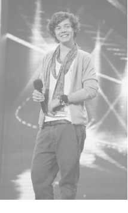
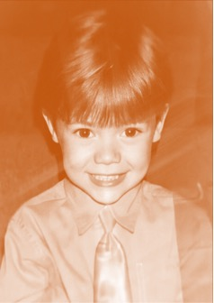
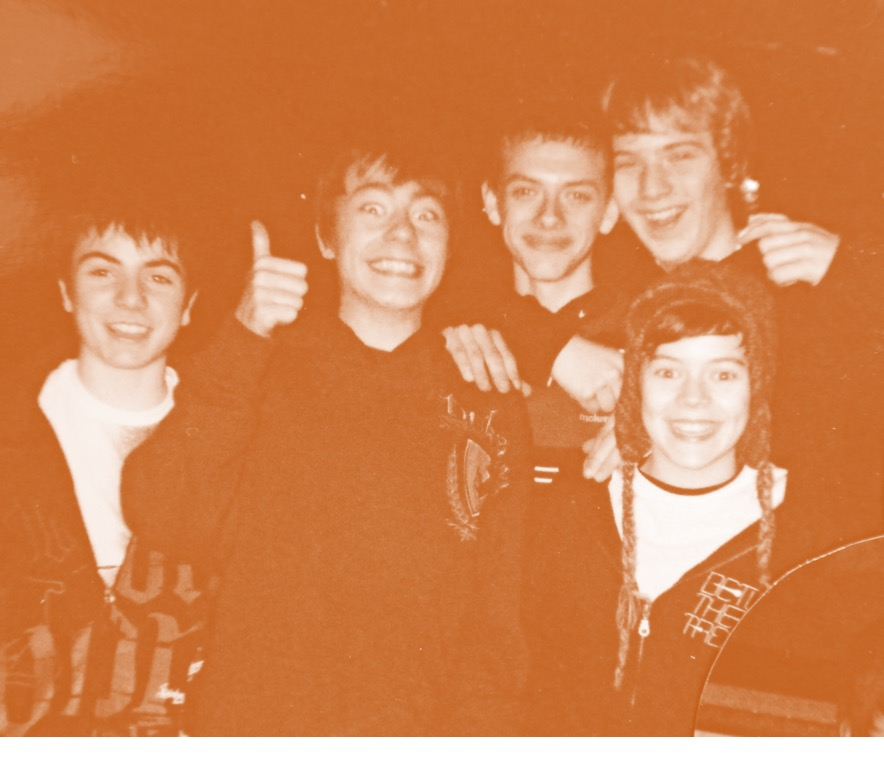
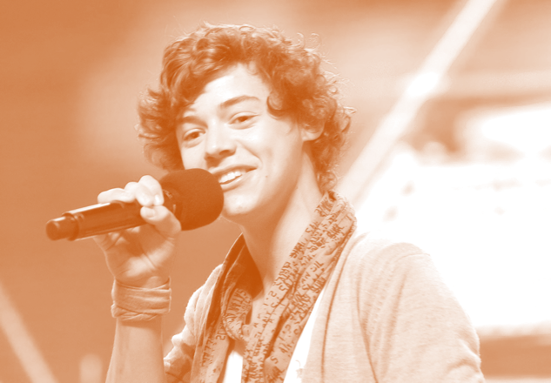
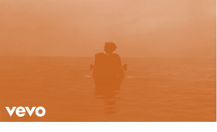

Гарри Эдвард Стайлс (англ. Harry Edward
Styles; род. 1 февраля 1994, Реддитч, Вустершир) — английский
певец, автор песен и актёр.

Гарри Стайлс начал свою музыкальную
карьеру в 2010 году с участия в шоу The X Factor. После того как
Гарри не достиг успеха в отборе вокального конкурса, он вместе с
четырьмя другими участниками шоу основал бой-бэнд One Direction,
впоследствии ставший одним из самых успешных и продаваемых
бой-бэндов всех времен.

Гарри Стайлс родился 1 февраля 1994 года
в городке Реддитч (Вустершир, Великобритания).
Он проявлял любовь к музыке с детства. Будучи дошкольником, он
выучил песню «The Girl of My Best Friend» Элвиса Пресли. Его
Стайлс отмечает, как человека,
повлиявшего на его музыкальное начало. Кроме того, на его
творчество особенно повлияли такие исполнители, как Фредди
Меркьюри, The Rolling Stones и The Beatles.
Когда ему было семь лет, его родители развелись, и он вместе с
сестрой Джеммой остался на воспитании матери, которая с детьми
переехала в маленькое местечко Холмс Чапел, находящееся в графстве
Чешир. Стайлс тяжело переживал
расставание родителей и был очень рад, когда его будущий отчим
Робин сделал предложение его матери.
В школе он был солистом своей собственной группы White Eskimo. Они
выступали на школьных концертах, в местных клубах и даже выиграли
конкурс Battle of the Bands Competition, в котором участвовали
местные любительские подростковые коллективы.
После окончания средней школы Стайлс
прекратил обучение и начал работать на неполный рабочий день в
пекарне, занимаясь развитием своих вокальных способностей.

ДИСКОГРАФИЯ
КАРЬЕРА
Этап 1.
THE X FACTOR И ONE DIRECTION
По совету своей матери, 11 апреля 2010 года Гарри Стайлc вместе с
Лиамом Пейном, Луи Томлинсоном, Найлом Хораном и Зейном Маликом по
отдельности пришли на 7 сезон британского проекта The X Factor.
Они не достигли успеха в отборе вокального конкурса и судья Николь
Шерзингер предложила конкурсантам объединиться в группу. Гарри
придумал для неё название One Direction и вскоре, под руководством
их наставника Саймона Коуэлла, они заняли на проекте 3 место.
После окончания шоу группа подписала контракт с лейблом Syco
Music. В ноябре 2011 года вышел их дебютный альбом Up All Night.
Далее группа выпустила ещё 4 альбома: Take Me Home (2012),
Midnight Memories (2013), Four (2014) и Made in the A.M. (2015).

Гарри на прослушивании в 2010 году
Этап 2.
СОЛЬНАЯ КАРЬЕРА
В конце марта 2017 года Стайлc анонсировал свой дебютный сольный
сингл под названием «Sign of the Times». Песня была выпущена 7
апреля и возглавила хит-парады в нескольких странах. Музыкальное
видео песни, в котором Стайлc летает и ходит по воде, принесло ему
награду «Brit Award» в категории «Лучшее британское видео года».
Полный альбом «Harry Styles», состоящий из 10 песен, вышел 12 мая.
В декабре 2019 года певец выпустил второй сольный альбом «Fine
Line», который включает в себя 12 треков, на четыре из которых
записаны видеоклипы. В 2020 году издание Rolling Stone включило
«Fine Line» в список 500 величайших альбомов всех времён,
расположив альбом Стайлcа на 491 месте. На 40-й церемонии вручения
наград «Brit Award» Гарри получил номинации в категориях «Лучший
британский соло-артист» и «Лучший британский альбом». В 2021 году
Национальная академия искусства и науки звукозаписи выдвинула
Гарри на получение трёх премий «Грэмми» в категориях «Лучший
вокальный поп-альбом» (Fine Line), «Лучшее сольное поп-исполнение»
(Watermelon Sugar) и «Лучшее музыкальное видео» (Adore You). По
итогам церемонии, прошедшей 14 марта, Гарри получил премию в
категории «Лучшее сольное поп-исполнение» (Watermelon Sugar). 11
мая этого же года «Watermelon Sugar» принесла Стайлcу награду
«Brit Award» в категории «Лучший британский сингл».
20 мая 2022 года Гарри Стайлc выпустил свой третий сольный альбом
«Harry’s House», который состоит из 13 песен. На 65-ой церемонии
«Грэмми» «Harry’s House» взял премию за лучший альбом года. В
феврале 2023 года Стайлc победил в четырех номинациях премии Brit
Awards в Великобритании, включая альбом года, артист года, песня
года и лучший поп/R’n’B-исполнитель.

Заставка клипа для сингла Sign of the times, 2017 год
Этап 3.
АКТЁРСКАЯ КАРЬЕРА
В начале марта 2016 года стало известно, что Гарри Стайлc исполнит
одну из главных ролей в фильме «Дюнкерк» режиссёра Кристофера
Нолана. Премьера фильма в России состоялась 20 июля 2017 года.
16 ноября 2019 года Гарри выступил актёром, ведущим и музыкальным
гостем в вечерней музыкально-юмористической передаче Saturday
Night Live.
Гарри Стайлc появится в роли Эроса, брата Таноса, в сцене после
титров картины Хлои Чжао «Вечные». Это станет первым появлением
Стайлcа и его персонажа в Кинематографической вселенной Marvel.
Гарри исполнил главную роль в психологическом триллере Оливии
Уайлд «Не беспокойся, дорогая». В настоящее время Гарри Стайлc
вместе с Эммой Коррин завершил съёмки в романтической драме Amazon
Studios «Мой полицейский», основанной на одноимённом романе 2012
года. Постановщиком фильма выступит Майкл Грандадж.
British Artist Video of the Year — «Sign of the Times»
Победа
Стиль и влияние
Эволюция.
В One Direction Стайлс носил узкие джинсы, прозрачные блузки,
цветочные принты, яркие костюмы и ботильоны.
В 2014 году начал сотрудничать со стилистом Гарри Ламбертом. В
2016 году он был опубликован на обложке журнала Another Man, после
чего Энн Донахью из The Guardian назвала его «искусствоведом»,
который предлагает «что-то другое, чем демонстративное отсутствие
рубашки» и транслирует
ВЕРНОСТЬ НИШЕВЫМ МИРАМ ИСКУССТВА И МОДЫ, А НЕ СТРЕМЛЕНИЕ К
МАССОВОЙ ИЗВЕСТНОСТИ
В 2018 году Гарри начал сотрудничество с итальянским домом моды Gucci. Как сольный артист, Стайлс выбрал розовые костюмы
«candyfloss» на заказ, топы с блестками, атласные клеши с принтом и тяжелую эстетику от Gucci. Эрика Харвуд из Vanity Fair заявила, что Стайлс превратился из «мальчика-бандера» в «ценителя роскошных костюмов», описывая его изменение стиля. Его стиль был отмечен как «яркий», «модный» и «веселый». Часто использует розовый цвет в
одежде.
В 2019 году Стайлс начал носить жилеты-свитера, мешковатые брюки с высокой талией и жемчужные ожерелья, что побудило Джейкоба Галлахера из The Wall Street Journal назвать его «популяризатором мужественного жемчужного ожерелья». Том Ламонт из The Guardian отметил, что некоторые модные решения Стайлса способствовали «важной политической дискуссии о гендерной моде». В 2020 году Стайлс стал первым мужчиной, появившимся в одиночку на обложке Vogue для его декабрьского номера. После выход журнала в свет, Стайлс подвергая критике, так как был одет в женское платье Gucci.
Комментируя критику в свой адрес по этому поводу, Стайлс заявил, что
НЕ НАДЕВАЯ [ЧТО-ТО], ПОТОМУ ЧТО ЭТО ЖЕНСКАЯ ОДЕЖДА, ВЫ
ЗАКРЫВАЕТЕСЬ ОТ ЦЕЛОГО МИРА ВЕЛИКОЛЕПНОЙ ОДЕЖДЫ. И Я ДУМАЮ, ЧТО САМОЕ ИНТЕРЕСНОЕ СЕЙЧАС В ТОМ, ЧТО ТЫ МОЖЕШЬ НОСИТЬ ТО, ЧТО ТЕБЕ НРАВИТСЯ. ЭТО НЕ ОБЯЗАТЕЛЬНО ДОЛЖЕН БЫТЬ X ИЛИ Y. ЭТИ ГРАНИЦЫ СТАНОВЯТСЯ ВСЕ БОЛЕЕ И БОЛЕЕ РАЗМЫТЫМИ
В 2022 году платье от Gucci, в котором он появился на обложке
журнала, было включено в экспозицию Музея Виктории и Альберта
названием «Формирование мужественности: искусство мужской одежды».
Несколько других нарядов Стайла также были выставлены в музеях,
включая синий бархатный костюм в Зале славы рок-н-ролла и кожаного
костюма в Музее Грэмми в Лос-Анджелесе.
Стайлса называют не только иконой поп-музыки, но и иконой моды и
человеком, оказавшим широкое влияние на моду и стиль в целом.
В 2022 году стало известно, что в 2023 году Техасский
государственный университет будет предлагать курс по стилям под
названием «Гарри Стайлс и культ знаменитости: идентичность,
Интернет и европейская поп-культура».